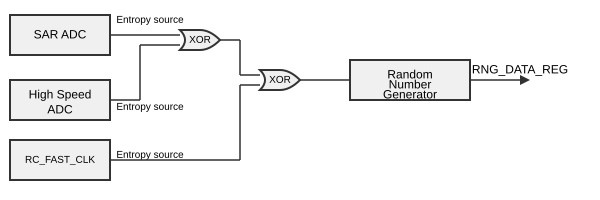

Random Number Generation
ESP32 contains a hardware random number generator (RNG). You can use the APIs esp_random() and esp_fill_random() to obtained random values from it.
Every 32-bit value that the system reads from the RNG_DATA_REG register of the random number generator is a true random number. These true random numbers are generated based on the thermal noise in the system and the asynchronous clock mismatch.
Thermal noise comes from the high-speed ADC or SAR ADC or both. Whenever the high-speed ADC or SAR ADC is enabled, bit streams will be generated and fed into the random number generator through an XOR logic gate as random seeds.
The following diagram shows the noise sources for the RNG on the ESP32:

The hardware RNG produces true random numbers so long as one or more of the following conditions are met:
RF subsystem is enabled, i.e., Wi-Fi or Bluetooth are enabled. When enabled, the RF subsystem internally enables the High Speed ADC that can be used as the entropy source. The High Speed ADC may only be available when the respective RF subsystem is active (e.g., not in sleep mode). See the Enabling RF subsystem section for more details.
The internal entropy source SAR ADC has been enabled by calling
bootloader_random_enable()and not yet disabled by callingbootloader_random_disable().While the ESP-IDF Second Stage Bootloader is running. This is because the default ESP-IDF bootloader implementation calls
bootloader_random_enable()when the bootloader starts, andbootloader_random_disable()before executing the application.
When any of these conditions are true, samples of physical noise are continuously mixed into the internal hardware RNG state to provide entropy. Consult the ESP32 Technical Reference Manual > Random Number Generator (RNG) [PDF] chapter for more details.
If none of the above conditions are true, the output of the RNG should be considered as pseudo-random only.
Enabling RF subsystem
The RF subsystem can be enabled with help of one of the following APIs:
Wi-Fi:
esp_wifi_start()Bluetooth (NimBLE):
nimble_port_init()which internally callsesp_bt_controller_enable()Bluetooth (Bluedroid):
esp_bt_controller_enable()
Startup
During startup, the ESP-IDF bootloader temporarily enables the non-RF internal entropy source (SAR ADC using internal reference voltage noise) that provides entropy for any first boot key generation.
However, after the application starts executing, then normally only pseudo-random numbers are available until Wi-Fi or Bluetooth are initialized or until the internal entropy source has been enabled again.
To re-enable the entropy source temporarily during application startup, or for an application that does not use Wi-Fi or Bluetooth, call the function bootloader_random_enable() to re-enable the internal entropy source. The function bootloader_random_disable() must be called to disable the entropy source again before using any of the following features:
ADC
I2S
Wi-Fi or Bluetooth
Note
The entropy source enabled during the boot process by the ESP-IDF Second Stage Bootloader seeds the internal RNG state with some entropy. However, the internal hardware RNG state is not large enough to provide a continuous stream of true random numbers. This is why a continuous entropy source must be enabled whenever true random numbers are required.
Note
If an application requires a source of true random numbers but cannot permanently enable a hardware entropy source, consider using a strong software DRBG implementation such as the mbedTLS CTR-DRBG or HMAC-DRBG, with an initial seed of entropy from hardware RNG true random numbers.
API Reference
Header File
This header file can be included with:
#include "esp_random.h"
Functions
-
uint32_t esp_random(void)
Get one random 32-bit word from hardware RNG.
If Wi-Fi or Bluetooth are enabled, this function returns true random numbers. In other situations, if true random numbers are required then consult the ESP-IDF Programming Guide "Random Number Generation" section for necessary prerequisites.
This function automatically busy-waits to ensure enough external entropy has been introduced into the hardware RNG state, before returning a new random number. This delay makes sure the reading frequency does not exceed 15-75 KHz. The actual value is dependent on the specific chip. More information on this can be found in components/esp_hw_support/hw_random.c.
- Returns:
Random value between 0 and UINT32_MAX
-
void esp_fill_random(void *buf, size_t len)
Fill a buffer with random bytes from hardware RNG.
Note
This function is implemented via calls to esp_random(), so the same constraints apply.
- Parameters:
buf -- Pointer to buffer to fill with random numbers.
len -- Length of buffer in bytes
Header File
This header file can be included with:
#include "bootloader_random.h"
This header file is a part of the API provided by the
bootloader_supportcomponent. To declare that your component depends onbootloader_support, add the following to your CMakeLists.txt:REQUIRES bootloader_support
or
PRIV_REQUIRES bootloader_support
Functions
-
void bootloader_random_enable(void)
Enable an entropy source for RNG if RF subsystem is disabled.
The exact internal entropy source mechanism depends on the chip in use but all SoCs use the SAR ADC to continuously mix random bits (an internal noise reading) into the HWRNG. Consult the SoC Technical Reference Manual for more information.
Can also be called from app code, if true random numbers are required without initialized RF subsystem. This might be the case in early startup code of the application when the RF subsystem has not started yet or if the RF subsystem should not be enabled for power saving.
Consult ESP-IDF Programming Guide "Random Number Generation" section for details.
Warning
This function is not safe to use if any other subsystem is accessing the RF subsystem or the ADC at the same time!
-
void bootloader_random_disable(void)
Disable entropy source for RNG.
Disables internal entropy source. Must be called after bootloader_random_enable() and before RF subsystem features, ADC, or I2S (ESP32 only) are initialized.
Consult the ESP-IDF Programming Guide "Random Number Generation" section for details.
-
void bootloader_fill_random(void *buffer, size_t length)
Fill buffer with 'length' random bytes.
Note
If this function is being called from app code only, and never from the bootloader, then it's better to call esp_fill_random().
- Parameters:
buffer -- Pointer to buffer
length -- This many bytes of random data will be copied to buffer
getrandom()
A compatible version of the Linux getrandom() function is also provided for ease of porting:
#include <sys/random.h>
ssize_t getrandom(void *buf, size_t buflen, unsigned int flags);
This function is implemented by calling esp_fill_random() internally.
The flags argument is ignored. This function is always non-blocking but the strength of any random numbers is dependent on the same conditions described above.
Return value is -1 (with errno set to EFAULT) if the buf argument is NULL, and equal to buflen otherwise.
getentropy()
A compatible version of the Linux getentropy() function is also provided for easy porting:
#include <unistd.h>
int getentropy(void *buffer, size_t length);
This function is implemented by calling getrandom() internally.
The strength of any random numbers is dependent on the same conditions described above.
Return value is 0 on success and -1 otherwise with errno set to:
EFAULTif thebufferargument is NULL.
EIOif thelengthis more then 256.